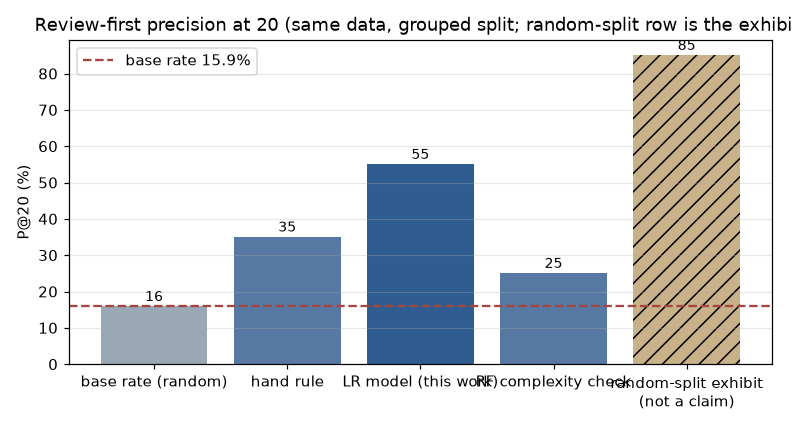
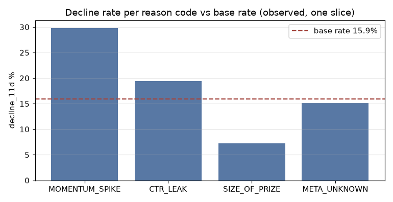
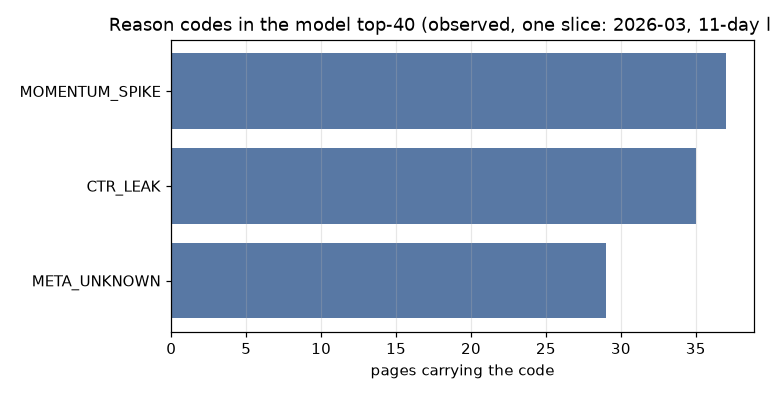

FlyRank ML Internship · Capstone research page · October 2026
A review-first ranking model for an 83,258-page portfolio — one pseudonymous slice, 36 clients, month 2026-03 — and every number below ties to a committed receipt JSON.
Search traffic in large content portfolios erodes every month, yet at any point in time the pages that will decline next are mostly unknowable — so this study asks whether a trained model can rank a human reviewer's reading queue better than the existing hand rule. The evidence comes from one pseudonymous warehouse slice: 83,258 pages across 36 clients in month 2026-03, features readable at decision time only (through 2026-03-20), a relative-to-self decline label judged on 03-21..31, and a 15.9% base decline rate, with 314 label-absent pages plus 37 no-pace pages dropped and disclosed. Twenty-one decision-time features feed a logistic model validated by 5-fold client-grouped splits — no client ever sits in both train and test — against a hand-rule baseline, under a ten-item leakage checklist that includes a deliberate confession test: adding the label's own input drove AUC 0.659 to 1.000, and it was removed. The honest result: review-first precision P@20 0.55 vs 0.35 for the hand rule on the same evaluation (base rate 15.9% printed beside every metric), full-frame AUC 65.9 vs 54.4 — while 13,037 of 13,277 decliners (98%) rank beyond 500, so this is a review-order queue, never a coverage claim. The deliverable ships as a playbook — ranked queue with reason codes, a size-of-prize rail for the big pages the model ranks lowest but that pay most, a five-item no-go list, and six monitoring triggers — and every number on this page traces to a committed receipt JSON.
Every review cycle starts the same way: someone has to choose which pages to open first. This study supports that one decision — the reading order for the coming week — and deliberately nothing else. On the studied slice, a random 20-page reading list would hold about 3 of the pages that genuinely declined over the next 11 days (base rate 15.9%); the production hand rule's list held 7 (P@20 0.35); this model's list held 11 (P@20 0.55). Doubling the hit rate changes which pages get opened this week — without pretending the model covers the problem, because most decliners (98%) sit far down the ranking.
What this page is not: an auto-action list, a prediction of a search engine, or an experiment. No intervention ran anywhere in this work, so no sentence here says "doing X will produce Y." The claim ladder tops out at observed, measured, directional, decision-support.
One mid-panel month from a large, gated warehouse release hosted on the dataset page: daily performance rows per pseudonymous page (client hashes and content hashes only — no brand names, no URLs, no raw queries), plus a dimension table of decision-time page metadata. The lane deliberately leaves later panel months sealed.
decline_11d = the page's mean daily impressions in 03-21..31 fell below 0.70× its mid-month pace — a relative-to-self threshold, not an absolute volume line.
Momentum capped at 10×; logs of early-window impressions, click rate, search volume, word count, backlinks; position mean; row staleness capped; days active; the meta_unknown neutralizing flag; a band-relative CTR-below-median flag; competition; and intent & content-type dummies. No product-built scores, no outcome-window columns anywhere (asserted by name and by scan).
The baseline is the production hand rule (staleness + pace + impact points), whose queue on this slice distributed as 65,032 no-action / 18,092 watch / 134 refresh. All model rows use client-grouped 5-fold splits (GroupKFold, fixed seeds): every test page is scored by a model that never saw its client; disjointness is asserted per fold, all 36 clients. Fold AUC under the grouped protocol: 0.670, 0.645, 0.686, 0.634, 0.647 (mean 0.656 ± 0.019). The random-split row is printed everywhere as the memorization exhibit, never cited as skill.
target_mean, decline_11d) — none reach features.momentum_capped (shuffling it alone costs ~0.033 AUC), matching the audited direction of the calibration table rather than an arbitrary importance list.Grouped receipts reproduce to the digit across reruns; the shuffled exhibit row is order-sensitive (it sits on a parallel GROUP BY row order) and its P@20 wobbles between 0.80-0.90 across reruns. Cross-checks therefore use declared tolerances — tight for grouped rows (0.11 AUC, 0.005 P@20), none for exhibit rows, which are only ever quoted as exhibits.
| Evaluation | AUC | P@20 | P@100 | P@500 |
|---|---|---|---|---|
| Hand rule (baseline) | 0.544 | 0.35 | 0.28 | 0.32 |
| Logistic model (client-grouped) | 0.659 | 0.55 | 0.47 | 0.48 |
| Random forest (complexity check) | 0.655 | 0.25 | 0.38 | 0.45 |
| Random-split exhibit (not a claim) | 0.674 | 0.85 | 0.68 | 0.52 |
Base rate: 15.9%. In full-frame AUC terms the logistic model holds 65.9 vs 54.4 for the rule and 65.5 for the random forest; the exhibit row inflates to 67.4. The queue metric is P@20 (0.55 vs 0.35); at 100 and 500 pages the multiplicative edge persists (0.47 vs 0.28, 0.48 vs 0.32). Fold AUC under the grouped protocol: mean 0.656 ± 0.019. The two models' top-20 lists share 0 pages — the model finds different pages, not a resharpened version of the rule. The random forest matched the logistic model's fold mean (0.657 vs 0.656) without any top-of-queue gain — complexity did not earn its keep. The exhibit's inflation is the memorization gap: 1.5 AUC points and +0.35 P@20, and its P@20 wobbles 0.80-0.90 between reruns while every grouped row is stable.

Top standardized coefficients: momentum_capped +0.276 (risk rises with pace spikes — matching the calibration table) and log impressions at -0.23 (bigger existing pages declined less, matching the volume finding below) — observed associations on one slice, not levers of causation.
The top-40 review list, reason-coded from committed receipts:
| Reason code | Pages carrying it | Observed decline rate | Share of frame |
|---|---|---|---|
| MOMENTUM_SPIKE (this-week pace > 2× last week) | 5,763 | 29.8% | 6.9% |
| CTR_LEAK (click rate below band median) | 37,137 | 19.4% | 44.6% |
| SIZE_OF_PRIZE (impressions ≥ 90th percentile) | 8,328 | 7.2% | 10.0% |
| META_UNKNOWN (update age unresolvable) | 67,109 | 15.1% | 80.6% |
Honest read of the top-40: it held 23 decliners — 57.5% of those pages, vs about 6 expected for a random 40 — and its code mix was MOMENTUM_SPIKE 37, CTR_LEAK 35, META_UNKNOWN 29. Two audited patterns sit underneath the codes. Low click rate co-occurred with larger declines at every readable position: +11.0 / +7.7 / +7.3 pp in the top-3 / 4-10 / 11-30 bands (each tier cell n ≥ 4,367). Impressions volume ran the opposite way as a risk signal: near-floor pages declined 20.8% (n=35,073) while the page-giants declined 7.4% (n=95) — which is exactly why the model's risk ranking is not a prize ranking: zero SIZE_OF_PRIZE pages made the model's top-40, so the playbook carries a second rail — the ten biggest pages outside the top 40, holding 1,416,001 early-window impressions combined, every one of them also flagged META_UNKNOWN.
Blind spot, printed as a rule: 13,037 of 13,277 decliners (98%) rank beyond 500. The queue orders human attention; it never claims coverage.


Everything lives in the public repo: this page, the notebooks (open any with the Colab link in its header), and the receipts. No dataset is committed; the starter CSV is the only local puck.
Receipts (committed JSON, one per week): w04_signal_receipt.json, w04_baseline_receipt.json, w05_model_receipt.json, w06_validation_receipt.json, w07_playbook_receipt.json under work/outputs/. Every number on this page appears in at least one of them.
To re-run: accept the gate on the dataset page, supply a read-only token (environment variable or Colab secret), then Runtime → Run all with fixed seeds. The capstone runs from the committed receipts alone. Grouped receipts reproduce to the digit; exhibit rows wobble by design and are labeled as such.
This work was completed during the FlyRank ML Internship 2026 — FlyRank — https://flyrank.ai — which hosts the pseudonymous warehouse release and set the public-safe constraints under which it was written.
Thanks to the internship program's reviewers, who kept every claim tied to a number it can carry. All remaining errors and uncertainties are the author's.